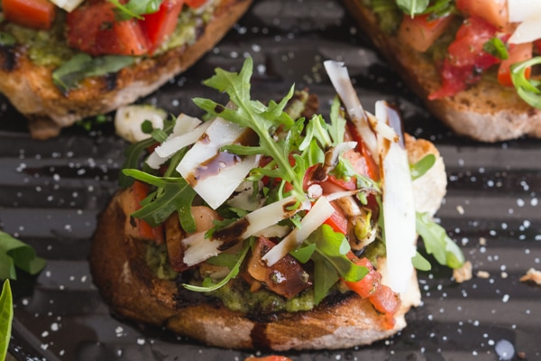
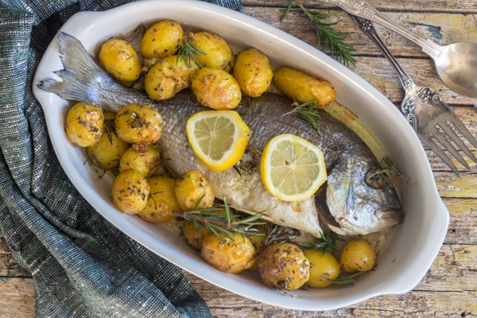

Shrimp Pasta

You will need:
| Ingredient | Quantity |
|---|---|
| Shrimp | 1/2-2 cups |
| Minced garlic | 1 clove |
| Olive oil | 1/4 cup |
| Fresh parsley | 2-4 tsp |
| Salt | 1-2 pinches |
| Hot pepper flakes | 1-2 dashes |
| Cooked long pasta(spaghetti) | 3 cups |
1. In a large frying pan add the olive oil, garlic, chopped parsley, shrimp, salt and hot pepper flakes. Cook on medium heat until shrimps are cooked and no longer pink approximately 5-6 minutes, but watch them and stir occasionally, because you don't want them to burn or stick to the pan.
2. While the shrimp is cooking, cook the pasta al dente in boiling salted water. Stirring often.
3. When shrimps are cooked, add the cooked al dente pasta and 1/4 cup (60 grams) of pasta water, cook on high heat tossing together until the water has evaporated almost becoming a creamy mixture, serve immediately topped with fresh chopped parsley.
Enjoy!
More Recipes

Bruschetta
 Baked Trout